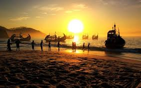
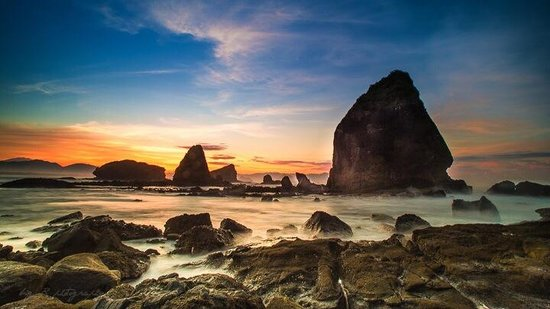

|  |  |
 |
Disini kita bisa mendapat informasi mengenai suatu objek wisata yang khususnya berada di Kabupaten Jember, kawasan wisata atau wahana yang berada didalam objek wisata/kawasan wisata yang dapat diperoleh dari web ini.Selain itu, sistem informasi pariwisata juga memberikan beberapa informasi penunjang kegiatan kepariwisataan (akomodasi, transportasi, tiket, hotel, dan lain lain). merupakan tugas dari sistem informasi pariwisata.